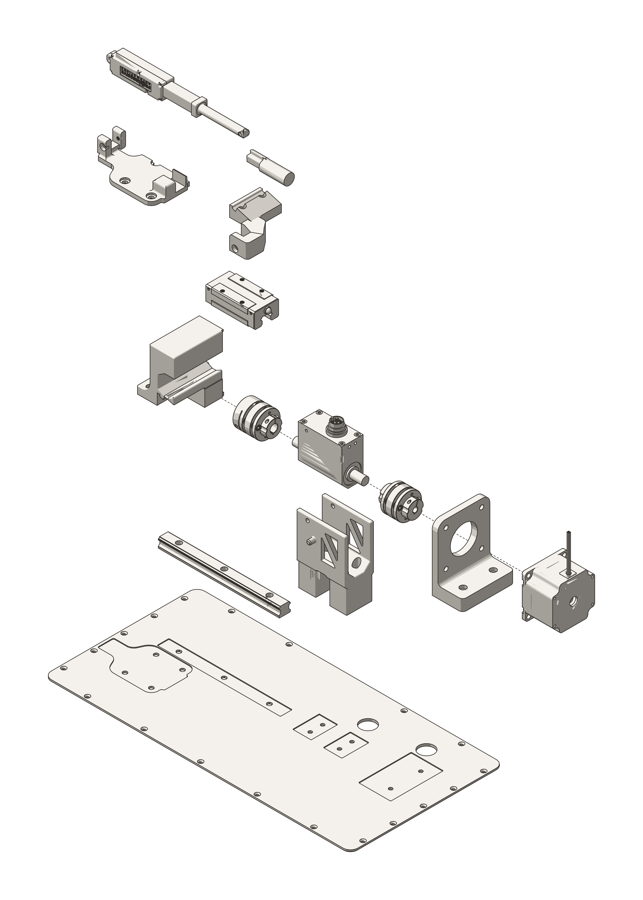
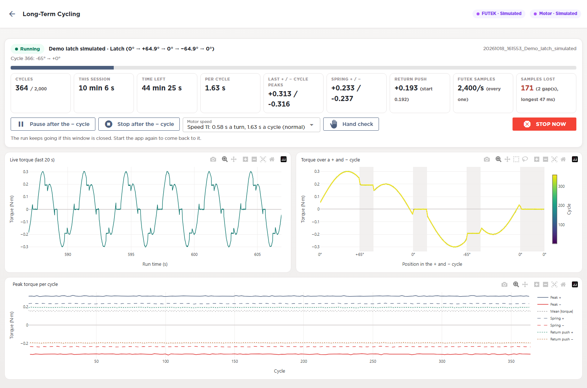
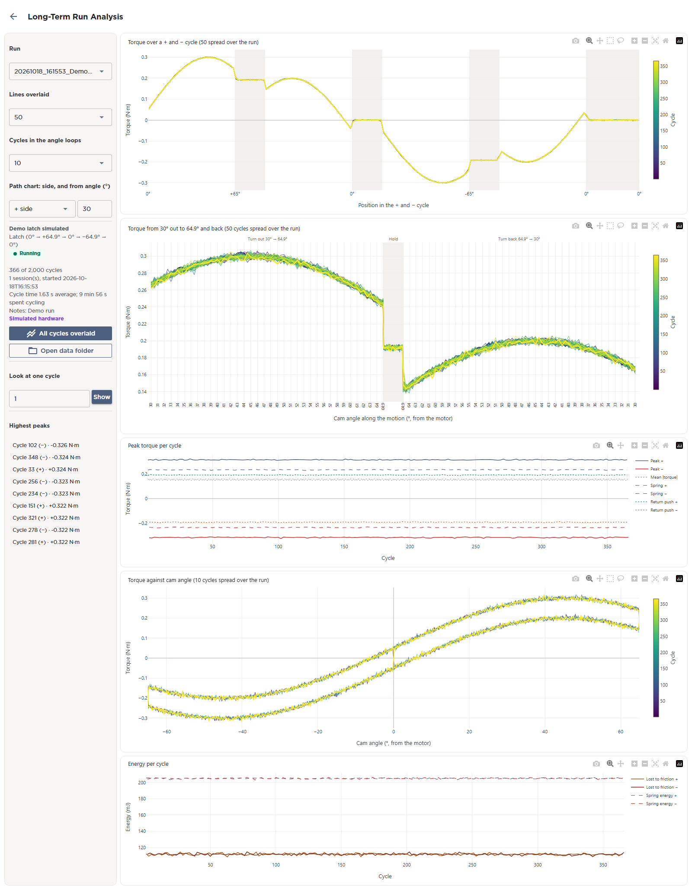
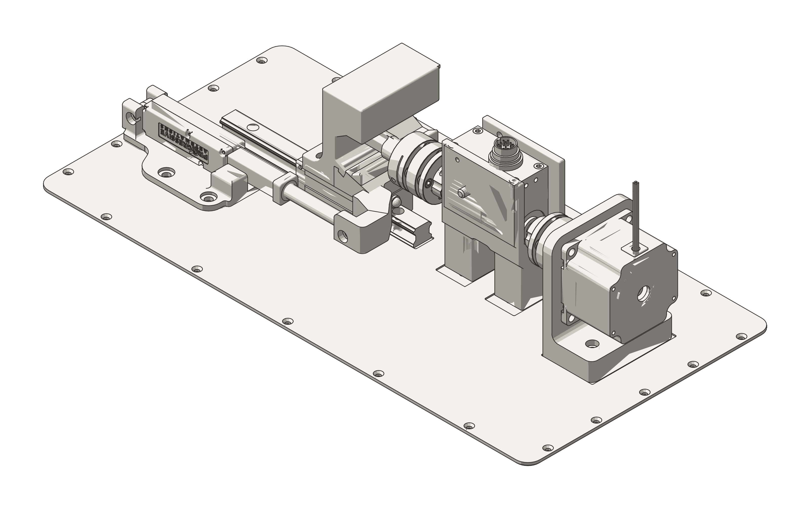

WedgeTLS, 2026 · Design, build and test software
A bench station I built to life-test Tyto deadbolts and their latch subassemblies. It cycles a part for days unattended and judges it from torque alone.

| Hardware | NEMA 23 stepper on a TB6600 motor driver, FUTEK rotary torque sensor, zero-backlash couplings, 8-inch actuator on a linear rail, Arduino, custom brackets and holders |
|---|---|
| Software | Python app with a browser UI, Arduino motor-control scripts, FUTEK's USB library for the sensor |
| Resolution | ±0.01 N·m per cycle at about 2,400 samples/s, held while the app runs. The sampler has its own thread and never writes to disk, so charts and analysis can't slow it down. Angle comes from the motor's step count, good to about 1°. |
TL;DR. A motor turns the deadbolt or latch back and forth, over and over, while a sensor measures how hard it pushes back on every turn. The software learns what a healthy turn feels like for that one part, and it stops the test as soon as a turn looks wrong, like when a spring breaks.
A stepper turns the latch cam to 65° each way and back. An inline torque sensor sits between motor and latch on zero-backlash couplings. The Arduino confirms every move, so a reset can never skip or double count a cycle.
Each turn out and back traces a loop. Out is spring plus friction, back is spring minus friction. The midline is spring torque, half the gap is friction, and the loop area is the energy lost each cycle.
In plain terms, the station gets to know each part. After a few dozen turns it has a picture of how that latch feels as it rotates. Every new turn is laid over that picture. A turn with the same shape but less force means the spring is getting weaker. A turn with a different shape means something inside moved or broke. When either one goes too far, the test pauses so the part can be looked at while the failure is still fresh.
Each turn of each cycle is a curve of torque against cam angle, . "Normal" is the median curve of the same turn over the same-speed cycles 100 to 600 before. The cycle is fitted as a stretched and shifted copy of normal:
The best size and offset come from a least-squares fit over the turn's angle points :
What the stretch and shift can't explain is the leftover . Divided by the ordinary leftover (its median over the normal cycles), it is the shape surprise :
The run pauses when, on any of the four turns, the median of the last 20 cycles says:
In words: is how big the turn is against recent normal, is where the sensor's zero sits (ignored), and is how different the shape is (1 = ordinary). Because is always the last few hundred cycles, slow wear moves along with the latch and never builds up into an alarm.
To check the watch itself, I compared it against a latch with one spring cut on purpose. A failed spring is easy to see in the torque: the push back on the return stroke drops to almost nothing. The watch has to flag that part and stay quiet on intact ones running the same test.
Sampling, recording and motor control run on separate threads. Every cycle is saved before it counts, a watchdog stops the rig if the sensor goes quiet, and the station re-finds its own shaft offset after any hand intervention.
The station runs from a Python app with a browser UI. The live page shows where the run stands, the spring and friction readings, and two charts: torque over the last few seconds, and every out-and-back cycle overlaid and colored by cycle number, so drift shows at a glance. Pause, stop and motor speed controls sit right under the numbers, and the run keeps going if the window closes.
A run can be paused, stopped or sped up without anyone at the bench, and the people waiting on a result can follow it while it runs.

A separate analysis page pulls up any run. It overlays cycles from across the run, zooms in on one part of the stroke, and lists each cycle's peaks, so a change in the part can be traced back to when it started.

